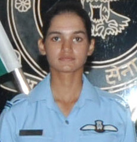

Current Affairs · Defence
The Agnipath Scheme: A New Generation of Agniveers

Every nation must constantly ask how best to raise the soldiers who defend it. In 2022, India introduced one of the biggest changes to military recruitment in its history: the Agnipath scheme, and with it a new kind of soldier — the Agniveer, the "fire-warrior."
This is a recent and debated reform, so it is worth explaining plainly and fairly.
How the scheme works
The Agnipath scheme was approved on 14 June 2022 and rolled out later that year for recruitment below the rank of commissioned officer across the Army, Navy and Air Force.[1] Under it, young recruits — called Agniveers, a new rank — serve for a four-year tenure, including about six months of training.
At the end of four years, up to 25 per cent of each batch may be selected to continue in the armed forces as regulars; the rest leave with a tax-free lump-sum "Seva Nidhi" package of roughly ₹11–12 lakh, a skill certificate, and assistance toward future careers.[1] The government has aimed to recruit tens of thousands of Agniveers each year.
The aims behind it
Supporters argue the scheme will lower the average age of the forces, create a larger pool of trained, disciplined young citizens, and modernise a recruitment system long due for reform. Eligibility is open to both young men and women, broadening who can serve.[1]
The debate

The scheme also drew significant debate. Critics raised concerns about job security, the lack of a pension for those not retained, and the effect of shorter tenures on unit cohesion and regimental tradition. The government responded with assurances on welfare, reservations in other services for ex-Agniveers, and adjustments such as a temporary rise in the upper age limit.[1]
Each step we take, a vow renewed, to shield the land where dreams are pursued.
The same oath, a new path
Whatever one's view of the model, the young people stepping forward as Agniveers are doing what soldiers in my book have always done — raising their hand to serve, accepting hardship and risk on behalf of strangers. The uniform's design may change with the times; the courage required to wear it does not.
Reforms will be argued over by policymakers, as they should be. But the eighteen-year-old who chooses to train for the defence of the nation deserves, in every era, our respect. They are the latest to answer a very old call.
Sources & further reading
- "Agnipath Scheme," Wikipedia.
- Press Information Bureau (PIB), Government of India — pib.gov.in.
All images via Wikimedia Commons, used under the licences shown in each caption.